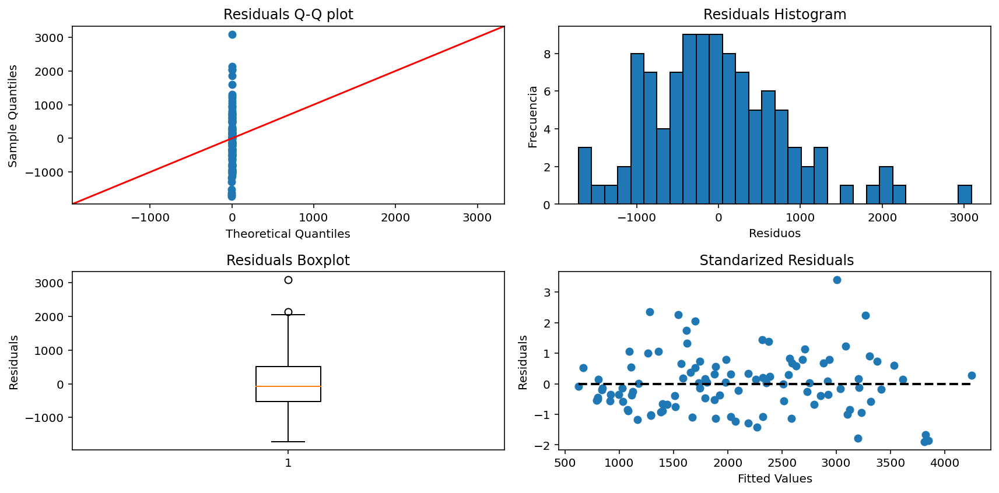

import pandas as pd
import statsmodels.formula.api as smf
import statsmodels.api as sm
import matplotlib.pyplot as plt
import seaborn as sns
import numpy as npTaller 3. Eduardo Avendano y Santiago Uribe
df = pd.read_csv('baseball.csv')
df = df.drop('name', axis=1)
dim_df = df.shape
print(f"The dataset consists of {dim_df[0]} rows and {dim_df[1]} columns")The dataset consists of 132 rows and 13 columnsData types of the columns:
df.dtypessalary int64
batting float64
OBP float64
runs int64
hits int64
dooubles int64
tripes int64
homeruns int64
RBI int64
walks int64
strikeouts int64
stolenbases int64
errors int64
dtype: objectLet’s check how much missing data there is by columns
# Missing values by column
df.isnull().sum()salary 0
batting 0
OBP 0
runs 0
hits 0
dooubles 0
tripes 0
homeruns 0
RBI 0
walks 0
strikeouts 0
stolenbases 0
errors 0
dtype: int64Descriptive Statistics
df.describe()| salary | batting | OBP | runs | hits | dooubles | tripes | homeruns | RBI | walks | strikeouts | stolenbases | errors | |
|---|---|---|---|---|---|---|---|---|---|---|---|---|---|
| count | 132.000000 | 132.000000 | 132.000000 | 132.000000 | 132.000000 | 132.000000 | 132.000000 | 132.000000 | 132.000000 | 132.000000 | 132.000000 | 132.000000 | 132.000000 |
| mean | 2139.242424 | 0.260833 | 0.334364 | 57.431818 | 111.310606 | 19.598485 | 2.515152 | 12.454545 | 55.219697 | 45.803030 | 65.174242 | 8.962121 | 6.613636 |
| std | 1225.598699 | 0.037279 | 0.044794 | 27.614078 | 45.447920 | 9.941708 | 2.435378 | 10.373457 | 28.923514 | 24.351259 | 33.043459 | 12.094668 | 5.458585 |
| min | 109.000000 | 0.063000 | 0.063000 | 0.000000 | 1.000000 | 0.000000 | 0.000000 | 0.000000 | 1.000000 | 0.000000 | 2.000000 | 0.000000 | 0.000000 |
| 25% | 1043.750000 | 0.243000 | 0.308750 | 37.000000 | 72.000000 | 12.000000 | 1.000000 | 3.000000 | 32.750000 | 28.000000 | 40.000000 | 2.000000 | 3.000000 |
| 50% | 2179.000000 | 0.260500 | 0.338500 | 57.500000 | 113.000000 | 18.000000 | 2.000000 | 10.000000 | 50.000000 | 42.500000 | 60.500000 | 4.000000 | 5.000000 |
| 75% | 2923.000000 | 0.285000 | 0.361500 | 77.250000 | 146.250000 | 27.000000 | 4.000000 | 19.000000 | 75.000000 | 59.000000 | 84.250000 | 11.000000 | 9.000000 |
| max | 6100.000000 | 0.341000 | 0.424000 | 133.000000 | 216.000000 | 46.000000 | 13.000000 | 44.000000 | 133.000000 | 108.000000 | 175.000000 | 72.000000 | 31.000000 |
Histograms
col_titles = ['Salary', 'Avg. Batting', 'On-Base Pct.', 'Runs', 'Hits', 'Doubles', 'Triples', 'Homeruns',
'Runs Batted In', 'Walks', 'Strikeouts', 'Stolen Bases', 'Errors']
fig, axs = plt.subplots(3, 5, figsize=(12,6))
axs = axs.ravel()
for i, col in enumerate(df.columns):
axs[i].hist(df[col], edgecolor='black')
axs[i].set_title(col_titles[i])
plt.tight_layout()
plt.show()
Boxplots
import matplotlib.patches as mpatches
fliers = dict(markerfacecolor='m', marker='D') #atypical data
mean_ = dict(markerfacecolor='green', marker='D')
mean_artist = mpatches.Patch(facecolor='green', label='Mean')
ad_artist = mpatches.Patch(color='m', label='Atypical Data')
fig, axs = plt.subplots(3, 5, figsize=(12,6))
axs = axs.ravel()
for i, col in enumerate(df.columns):
bp = axs[i].boxplot(df[col], vert=False, flierprops=fliers, showmeans=True, meanprops=mean_)
axs[i].legend(handles=[mean_artist, ad_artist], loc='upper left', fontsize=8)
axs[i].set_title(col_titles[i])
plt.tight_layout()
plt.show()The analysis conducted shows that both in the histograms and box plots, the batting average and on-base percentage variables are skewed to the left, while the triples, errors, and stolen bases variables are skewed to the right, and these same three variables have the most atypical data. It can also be observed that the batting average and on-base percentage variables have a small standard deviation due to the size of the whiskers. Finally, for most variables, the median and mean have similar values.
Correlation
fig, ax = plt.subplots(figsize=(10, 10))
corr_matrix = df.corr()
corr_matrix = corr_matrix.rename(columns=dict(zip(corr_matrix.columns, col_titles)))
corr_matrix = corr_matrix.rename(index=dict(zip(corr_matrix.index, col_titles)))
sns.heatmap(corr_matrix, square=True, annot=True, ax=ax)
plt.show()
The correlation matrix shows that several variables have high correlation coefficients (such as 0.89, 0.84, and 0.8). Therefore, it is important to exercise caution when dealing with variables that have a high degree of correlation, as they can have a significant impact on the model results.
Linear Regression Model
from scipy.stats import shapiro
from statsmodels.stats.diagnostic import het_breuschpagan
def checkModelAssumptions(model):
residuos = model.resid
fig, axs = plt.subplots(nrows=2, ncols=2, figsize=(12, 6))
#QQ plot
sm.qqplot(residuos, line='45', ax=axs[0,0])
axs[0,0].set_title('Residuals Q-Q plot')
#Residuals Histogram
axs[0,1].hist(residuos, bins=30, edgecolor='black')
axs[0,1].set_xlabel('Residuos')
axs[0,1].set_ylabel('Frecuencia')
axs[0,1].set_title('Residuals Histogram')
#Reiduals Boxplot
axs[1,0].boxplot(residuos)
axs[1,0].set_ylabel('Residuals')
axs[1,0].set_title('Residuals Boxplot')
#Residuals
axs[1,1].scatter(model.fittedvalues, model.resid_pearson)
axs[1,1].plot([min(model.fittedvalues), max(model.fittedvalues)], [0, 0], 'k--', lw=2)
axs[1,1].set_xlabel('Fitted Values')
axs[1,1].set_ylabel('Residuals')
axs[1,1].set_title(' Standarized Residuals')
plt.tight_layout()
plt.show()
#Normality test
print('================= Normality test =================')
stat, p = shapiro(residuos)
print('Estadística de prueba:', stat)
print('Valor p:', p)
if p <= 0.05: print("Se rechaza H0")
else: print("No se rechaza H0")
#Homoscedasticity test
print('================= Homoscedasticity test =================')
lm, lm_pvalue, fvalue, f_pvalue = het_breuschpagan(residuos, model.model.exog)
print('Lagrange multiplier statistic:', lm)
print('p-value', lm_pvalue)
print('F value:', fvalue)
print('F p-value', f_pvalue)
if lm_pvalue <= 0.05: print("Se rechaza H0")
else: print("No se rechaza H0")Dataset split into train and test
# Agregando una columna de unos para el intercepto
df = sm.add_constant(df)from sklearn.model_selection import train_test_split
X_train, X_test, y_train, y_test = train_test_split(df.drop('salary', axis=1),
df['salary'], test_size=0.2, random_state=123)# Fitting the regression model
complete_model = sm.OLS(y_train, X_train).fit()
print(complete_model.summary()) OLS Regression Results
==============================================================================
Dep. Variable: salary R-squared: 0.509
Model: OLS Adj. R-squared: 0.445
Method: Least Squares F-statistic: 7.935
Date: Thu, 04 May 2023 Prob (F-statistic): 5.68e-10
Time: 21:52:53 Log-Likelihood: -858.10
No. Observations: 105 AIC: 1742.
Df Residuals: 92 BIC: 1777.
Df Model: 12
Covariance Type: nonrobust
===============================================================================
coef std err t P>|t| [0.025 0.975]
-------------------------------------------------------------------------------
const 610.4817 825.541 0.739 0.461 -1029.113 2250.077
batting 2222.3302 1.14e+04 0.195 0.846 -2.05e+04 2.49e+04
OBP -1638.8541 8744.203 -0.187 0.852 -1.9e+04 1.57e+04
runs 7.3625 16.456 0.447 0.656 -25.321 40.046
hits 0.7794 9.802 0.080 0.937 -18.689 20.248
dooubles -15.8879 19.852 -0.800 0.426 -55.316 23.541
tripes -28.0621 51.604 -0.544 0.588 -130.552 74.428
homeruns 16.9401 28.594 0.592 0.555 -39.851 73.731
RBI 23.4869 12.224 1.921 0.058 -0.791 47.765
walks 2.7735 13.770 0.201 0.841 -24.575 30.122
strikeouts -4.6099 4.667 -0.988 0.326 -13.879 4.659
stolenbases 14.9283 12.222 1.221 0.225 -9.345 39.202
errors -19.7701 16.648 -1.188 0.238 -52.835 13.295
==============================================================================
Omnibus: 12.536 Durbin-Watson: 1.979
Prob(Omnibus): 0.002 Jarque-Bera (JB): 13.938
Skew: 0.715 Prob(JB): 0.000941
Kurtosis: 4.067 Cond. No. 2.73e+04
==============================================================================
Notes:
[1] Standard Errors assume that the covariance matrix of the errors is correctly specified.
[2] The condition number is large, 2.73e+04. This might indicate that there are
strong multicollinearity or other numerical problems.print('Coefficients LR')
print(complete_model.params)Coefficients LR
const 610.481682
batting 2222.330221
OBP -1638.854103
runs 7.362492
hits 0.779417
dooubles -15.887854
tripes -28.062148
homeruns 16.940114
RBI 23.486874
walks 2.773515
strikeouts -4.609948
stolenbases 14.928319
errors -19.770148
dtype: float64Significant variables for the model
print('p-values variables')
print(complete_model.pvalues)p-values variables
const 0.461490
batting 0.846156
OBP 0.851743
runs 0.655638
hits 0.936797
dooubles 0.425598
tripes 0.587896
homeruns 0.555018
RBI 0.057780
walks 0.840817
strikeouts 0.325847
stolenbases 0.225035
errors 0.238081
dtype: float64Metrics to check the model
from sklearn.metrics import mean_squared_error
y_test_pred = complete_model.predict(X_test)
mse = mean_squared_error(y_test, y_test_pred)
print(f'MSE for the LR Model: {mse}')MSE for the LR Model: 472509.2342122604Check model assumptions:
checkModelAssumptions(complete_model)================= Normality test =================
Estadística de prueba: 0.9682337641716003
Valor p: 0.012694088742136955
Se rechaza H0
================= Homoscedasticity test =================
Lagrange multiplier statistic: 20.006687347370598
p-value 0.06695956645196854
F value: 1.8046667227031863
F p-value 0.05864618246295086
No se rechaza H0The linear regression model of all variables has an adjusted R-squared of 0.445, suggesting that approximately 44.5% of the variability of the response variable (salary) can be explained by the predictor variables included in the model.
Some of the regression coefficients have high p-values, suggesting that they are not statistically significant. For example, the coefficient for “hits” has a p-value of 0.936797, suggesting that it is not a significant variable for predicting salary. In addition, the variable “RBI” has a marginally significant p-value (0.057780), suggesting that it may be an important variable, but further analysis is needed to confirm its significance.
Regarding the MSE, the obtained value indicates that there is high variance between the values predicted by the model and the actual values of the target variable. In other words, the model does not fit the data well and underperforms in the prediction task. This may occur because there are variables that are highly correlated, as evidenced by values of 0.89 and 0.84.
With respect to check the model assumptions since the null hypothesis is rejected in Shapiro Wilk test, the residuals are not from a normal distribution. It can also be verified that the QQ plot does not conform to a normal distribution. In homoscedasticity test, since H0 is not rejected, it means that errors have a constant variance in all observations and, therefore, there is no heteroscedasticity. Furthermore, it can be seen that the residuals are evenly and randomly distributed around zero.
Modelos Propuestos:
Selection of the best variables using a greedy approach. At each stage, this estimator chooses the best feature to add based on the cross-validation score of an estimator.
from sklearn.feature_selection import SequentialFeatureSelector
from sklearn.linear_model import LinearRegression
from sklearn.model_selection import train_test_split
df_copy = df.copy()
df_copy = df_copy.drop('const', axis=1)
X_train, X_test, y_train, y_test = train_test_split(df_copy.drop('salary', axis=1),
df_copy['salary'], test_size=0.2, random_state=123)
# Model
model = LinearRegression().fit(X_train, y_train)
sfs = SequentialFeatureSelector(model, direction='forward', n_features_to_select=3)
sfs.fit(X_train, y_train)
# Variables seleccionadas
selected_features = X_train.columns[sfs.get_support()]
print("Variables seleccionadas:", selected_features)
# Entrenar el modelo con las variables seleccionadas
X_selected = X_train.iloc[:, sfs.get_support()]
model_final = LinearRegression().fit(X_selected, y_train)
coef_dict = dict(zip(X_selected.columns, model_final.coef_))
coef_dict['intercept'] = model_final.intercept_
print(coef_dict)
y_pred_selected = model_final.predict(X_test.iloc[:, sfs.get_support()])
mse_selected = mean_squared_error(y_test, y_pred_selected)
print(f"MSE del modelo con variables seleccionadas: {mse_selected}")Variables seleccionadas: Index(['runs', 'tripes', 'homeruns'], dtype='object')
{'runs': 21.996696479214034, 'tripes': -57.43388406557736, 'homeruns': 32.45593597987061, 'intercept': 578.0977492624365}
MSE del modelo con variables seleccionadas: 500367.14098529215residuos = y_test - y_pred_selected
#Normality test
print('================= Normality test =================')
stat, p = shapiro(residuos)
print('Estadística de prueba:', stat)
print('Valor p:', p)
if p <= 0.05: print("Se rechaza H0")
else: print("No se rechaza H0")
#Homoscedasticity test
print('================= Homoscedasticity test =================')
lm, lm_pvalue, fvalue, f_pvalue = het_breuschpagan(residuos, X_test)
print('Lagrange multiplier statistic:', lm)
print('p-value', lm_pvalue)
print('F value:', fvalue)
print('F p-value', f_pvalue)
if lm_pvalue <= 0.05: print("Se rechaza H0")
else: print("No se rechaza H0")================= Normality test =================
Estadística de prueba: 0.9774359464645386
Valor p: 0.8004268407821655
No se rechaza H0
================= Homoscedasticity test =================
Lagrange multiplier statistic: 13.2369982289926
p-value 0.2781180219840999
F value: 1.2022266698458488
F p-value 0.36262790015504376
No se rechaza H0For both tests (homoscedasticity and normality) H0 is not rejected, so the residuals come from a normal distribution and have constant variance.
Model removing pairs of variables with high correlation, hits-runs (0.89)
df_copy = df.copy()
df_copy = df_copy.drop(['hits', 'runs'], axis=1)
X_train, X_test, y_train, y_test = train_test_split(df_copy.drop('salary', axis=1),
df_copy['salary'], test_size=0.2, random_state=123)
model2 = sm.OLS(y_train, X_train).fit()
print(model2.summary()) OLS Regression Results
==============================================================================
Dep. Variable: salary R-squared: 0.507
Model: OLS Adj. R-squared: 0.454
Method: Least Squares F-statistic: 9.664
Date: Thu, 04 May 2023 Prob (F-statistic): 6.62e-11
Time: 21:52:54 Log-Likelihood: -858.28
No. Observations: 105 AIC: 1739.
Df Residuals: 94 BIC: 1768.
Df Model: 10
Covariance Type: nonrobust
===============================================================================
coef std err t P>|t| [0.025 0.975]
-------------------------------------------------------------------------------
const 563.4073 805.423 0.700 0.486 -1035.778 2162.593
batting 5140.0797 7691.127 0.668 0.506 -1.01e+04 2.04e+04
OBP -3691.6341 6589.876 -0.560 0.577 -1.68e+04 9392.719
dooubles -12.4389 17.454 -0.713 0.478 -47.094 22.216
tripes -14.8323 45.047 -0.329 0.743 -104.274 74.609
homeruns 21.4989 23.591 0.911 0.364 -25.342 68.339
RBI 24.3652 11.277 2.161 0.033 1.974 46.756
walks 8.0549 9.709 0.830 0.409 -11.223 27.333
strikeouts -4.7943 4.427 -1.083 0.282 -13.585 3.997
stolenbases 19.5713 8.651 2.262 0.026 2.395 36.747
errors -19.5004 16.334 -1.194 0.236 -51.932 12.931
==============================================================================
Omnibus: 11.564 Durbin-Watson: 1.947
Prob(Omnibus): 0.003 Jarque-Bera (JB): 12.487
Skew: 0.685 Prob(JB): 0.00194
Kurtosis: 3.989 Cond. No. 1.24e+04
==============================================================================
Notes:
[1] Standard Errors assume that the covariance matrix of the errors is correctly specified.
[2] The condition number is large, 1.24e+04. This might indicate that there are
strong multicollinearity or other numerical problems.y_test_pred = model2.predict(X_test)
mse = mean_squared_error(y_test, y_test_pred)
print(f'MSE for the LR Model: {mse}')MSE for the LR Model: 488929.61951423663checkModelAssumptions(model2)
================= Normality test =================
Estadística de prueba: 0.9707664251327515
Valor p: 0.020151201635599136
Se rechaza H0
================= Homoscedasticity test =================
Lagrange multiplier statistic: 17.43924721889783
p-value 0.0651922403237696
F value: 1.872173532672274
F p-value 0.05877063885495448
No se rechaza H0The linear regression model has an adjusted R-squared of 0.454, suggesting that approximately 45.4% of the variability of the response variable (salary) can be explained by the predictor variables included in the model.
The MSE is slightly higher than the full model.
Since the null hypothesis is rejected in Shapiro Wilk test, the residuals are not from a normal distribution. In homoscedasticity test, since H0 is not rejected, it means that errors have a constant variance in all observations and, therefore, there is no heteroscedasticity. Furthermore, it can be seen that the residuals are evenly and randomly distributed around zero.
Model removing pairs of variables with high correlation, hits-runs (0.89) and doubles-homeruns (0.84)
df_copy = df.copy()
df_copy = df_copy.drop(['hits', 'runs', 'dooubles', 'homeruns'], axis=1)
X_train, X_test, y_train, y_test = train_test_split(df_copy.drop('salary', axis=1),
df_copy['salary'], test_size=0.2, random_state=123)
model3 = sm.OLS(y_train, X_train).fit()
print(model3.summary()) OLS Regression Results
==============================================================================
Dep. Variable: salary R-squared: 0.500
Model: OLS Adj. R-squared: 0.458
Method: Least Squares F-statistic: 11.98
Date: Thu, 04 May 2023 Prob (F-statistic): 1.03e-11
Time: 21:52:55 Log-Likelihood: -859.06
No. Observations: 105 AIC: 1736.
Df Residuals: 96 BIC: 1760.
Df Model: 8
Covariance Type: nonrobust
===============================================================================
coef std err t P>|t| [0.025 0.975]
-------------------------------------------------------------------------------
const 510.0526 797.551 0.640 0.524 -1073.074 2093.179
batting 1469.4215 7021.885 0.209 0.835 -1.25e+04 1.54e+04
OBP -1149.4606 6208.703 -0.185 0.854 -1.35e+04 1.12e+04
tripes -25.7709 43.824 -0.588 0.558 -112.761 61.219
RBI 28.8328 6.412 4.496 0.000 16.104 41.561
walks 4.6577 9.150 0.509 0.612 -13.505 22.820
strikeouts -2.9994 4.041 -0.742 0.460 -11.022 5.023
stolenbases 20.0057 8.558 2.338 0.021 3.018 36.993
errors -18.9731 16.184 -1.172 0.244 -51.098 13.152
==============================================================================
Omnibus: 8.148 Durbin-Watson: 1.956
Prob(Omnibus): 0.017 Jarque-Bera (JB): 7.774
Skew: 0.603 Prob(JB): 0.0205
Kurtosis: 3.566 Cond. No. 1.12e+04
==============================================================================
Notes:
[1] Standard Errors assume that the covariance matrix of the errors is correctly specified.
[2] The condition number is large, 1.12e+04. This might indicate that there are
strong multicollinearity or other numerical problems.y_test_pred = model3.predict(X_test)
mse = mean_squared_error(y_test, y_test_pred)
print(f'MSE for the LR Model: {mse}')MSE for the LR Model: 451816.86700758204checkModelAssumptions(model3)================= Normality test =================
Estadística de prueba: 0.9753574132919312
Valor p: 0.047396767884492874
Se rechaza H0
================= Homoscedasticity test =================
Lagrange multiplier statistic: 9.749838928412233
p-value 0.2830248338272729
F value: 1.2283240870638925
F p-value 0.2909760480199131
No se rechaza H0The linear regression model has an adjusted R-squared of 0.458, suggesting that approximately 45.8% of the variability of the response variable (salary) can be explained by the predictor variables included in the model.
In terms of the MSE, it has a lower MSE than the full model, which indicates that this model fits the data better, although the MSE is still high.
Since the null hypothesis is rejected in Shapiro Wilk test, the residuals are not from a normal distribution. In homoscedasticity test, since H0 is not rejected, it means that errors have a constant variance in all observations and, therefore, there is no heteroscedasticity. Furthermore, it can be seen that the residuals are evenly and randomly distributed around zero.
Model removing pairs of variables with high correlations, hits-runs (0.89) and OBP-batting (0.8)
df_copy = df.copy()
df_copy = df_copy.drop(['hits', 'runs', 'OBP', 'batting'], axis=1)
X_train, X_test, y_train, y_test = train_test_split(df_copy.drop('salary', axis=1),
df_copy['salary'], test_size=0.2, random_state=123)
model4 = sm.OLS(y_train, X_train).fit()
print(model4.summary()) OLS Regression Results
==============================================================================
Dep. Variable: salary R-squared: 0.505
Model: OLS Adj. R-squared: 0.463
Method: Least Squares F-statistic: 12.22
Date: Thu, 04 May 2023 Prob (F-statistic): 6.53e-12
Time: 21:52:56 Log-Likelihood: -858.53
No. Observations: 105 AIC: 1735.
Df Residuals: 96 BIC: 1759.
Df Model: 8
Covariance Type: nonrobust
===============================================================================
coef std err t P>|t| [0.025 0.975]
-------------------------------------------------------------------------------
const 643.0386 265.933 2.418 0.017 115.167 1170.911
dooubles -9.5105 16.723 -0.569 0.571 -42.706 23.685
tripes -7.5679 43.311 -0.175 0.862 -93.540 78.404
homeruns 16.4791 22.207 0.742 0.460 -27.602 60.560
RBI 28.2745 9.593 2.947 0.004 9.233 47.316
walks 3.6807 5.216 0.706 0.482 -6.672 14.034
strikeouts -5.2118 4.193 -1.243 0.217 -13.535 3.111
stolenbases 21.4778 8.106 2.650 0.009 5.388 37.568
errors -18.2242 16.094 -1.132 0.260 -50.170 13.722
==============================================================================
Omnibus: 10.198 Durbin-Watson: 1.960
Prob(Omnibus): 0.006 Jarque-Bera (JB): 10.555
Skew: 0.641 Prob(JB): 0.00510
Kurtosis: 3.878 Cond. No. 337.
==============================================================================
Notes:
[1] Standard Errors assume that the covariance matrix of the errors is correctly specified.y_test_pred = model4.predict(X_test)
mse = mean_squared_error(y_test, y_test_pred)
print(f'MSE for the LR Model: {mse}')MSE for the LR Model: 496001.73702509375checkModelAssumptions(model4)================= Normality test =================
Estadística de prueba: 0.9727652072906494
Valor p: 0.029171880334615707
Se rechaza H0
================= Homoscedasticity test =================
Lagrange multiplier statistic: 16.493149514567264
p-value 0.03584156289911877
F value: 2.2361861606111755
F p-value 0.031107792256653357
Se rechaza H0The linear regression model has an adjusted R-squared of 0.463, suggesting that approximately 46.3% of the variability of the response variable (salary) can be explained by the predictor variables included in the model.
The MSE is slightly higher than the full model.
Since the null hypothesis is rejected in Shapiro Wilk test, the residuals are not from a normal distribution. In homoscedasticity test, since H0 is rejected, it means that there is sufficient evidence to conclude that the variance of the errors is not constant and, therefore, that there is heteroscedasticity in the model.
Model removing the variables with the highest p-value from the complete model:
df_copy = df.copy()
df_copy = df_copy.drop(['hits', 'walks', 'OBP', 'batting'], axis=1)
X_train, X_test, y_train, y_test = train_test_split(df_copy.drop('salary', axis=1),
df_copy['salary'], test_size=0.2, random_state=123)
model5 = sm.OLS(y_train, X_train).fit()
print(model5.summary()) OLS Regression Results
==============================================================================
Dep. Variable: salary R-squared: 0.508
Model: OLS Adj. R-squared: 0.467
Method: Least Squares F-statistic: 12.39
Date: Thu, 04 May 2023 Prob (F-statistic): 4.74e-12
Time: 21:52:57 Log-Likelihood: -858.16
No. Observations: 105 AIC: 1734.
Df Residuals: 96 BIC: 1758.
Df Model: 8
Covariance Type: nonrobust
===============================================================================
coef std err t P>|t| [0.025 0.975]
-------------------------------------------------------------------------------
const 638.8948 264.001 2.420 0.017 114.856 1162.933
runs 10.0074 9.188 1.089 0.279 -8.232 28.246
dooubles -14.7123 16.905 -0.870 0.386 -48.269 18.844
tripes -28.5430 46.473 -0.614 0.541 -120.792 63.706
homeruns 12.4897 21.779 0.573 0.568 -30.740 55.720
RBI 25.3140 10.201 2.481 0.015 5.065 45.563
strikeouts -4.6401 3.924 -1.183 0.240 -12.429 3.149
stolenbases 14.4213 11.271 1.279 0.204 -7.952 36.795
errors -19.0235 15.935 -1.194 0.235 -50.654 12.607
==============================================================================
Omnibus: 11.750 Durbin-Watson: 1.992
Prob(Omnibus): 0.003 Jarque-Bera (JB): 12.680
Skew: 0.696 Prob(JB): 0.00176
Kurtosis: 3.979 Cond. No. 350.
==============================================================================
Notes:
[1] Standard Errors assume that the covariance matrix of the errors is correctly specified.y_test_pred = model5.predict(X_test)
mse = mean_squared_error(y_test, y_test_pred)
print(f'MSE for the LR Model: {mse}')MSE for the LR Model: 465509.7083045767checkModelAssumptions(model5)================= Normality test =================
Estadística de prueba: 0.969240665435791
Valor p: 0.015239850617945194
Se rechaza H0
================= Homoscedasticity test =================
Lagrange multiplier statistic: 13.810639655586295
p-value 0.08683650570051278
F value: 1.8174014516726242
F p-value 0.08300775391851146
No se rechaza H0The linear regression model has an adjusted R-squared of 0.467, suggesting that approximately 46.7% of the variability of the response variable (salary) can be explained by the predictor variables included in the model.
In terms of the MSE, it has a lower MSE than the full model, which indicates that this model fits the data better, although the MSE is still high.
Since the null hypothesis is rejected in Shapiro Wilk test, the residuals are not from a normal distribution. In homoscedasticity test, since H0 is not rejected, it means that errors have a constant variance in all observations and, therefore, there is no heteroscedasticity. Furthermore, it can be seen that the residuals are evenly and randomly distributed around zero.
Model considering a PCA analysis:
from sklearn.decomposition import PCA
pca = PCA(n_components=13)
pca.fit(df.drop(['salary'], axis=1))
X_pca = pca.fit_transform(df.drop(['salary'], axis=1))
expl = pca.explained_variance_ratio_
print('suma:',sum(expl[0:5]))
plt.plot(np.cumsum(pca.explained_variance_ratio_))
plt.xlabel('number of components')
plt.xticks(np.arange(0, df.shape[1]-1, 1.0))
plt.ylabel('cumulative explained variance')
plt.grid()
plt.show()suma: 0.982670851047459X_pca_df = pd.DataFrame(X_pca[:, :4], columns=['PC1', 'PC2', 'PC3', 'PC4'])
X_pca_df['salary'] = df['salary']
from sklearn.model_selection import train_test_split
X_train, X_test, y_train, y_test = train_test_split(X_pca_df.drop('salary', axis=1), X_pca_df['salary'], test_size=0.2, random_state=123)
model_pca = sm.OLS(y_train, X_train).fit()
print(model_pca.summary()) OLS Regression Results
=======================================================================================
Dep. Variable: salary R-squared (uncentered): 0.115
Model: OLS Adj. R-squared (uncentered): 0.080
Method: Least Squares F-statistic: 3.290
Date: Thu, 04 May 2023 Prob (F-statistic): 0.0140
Time: 21:52:59 Log-Likelihood: -960.59
No. Observations: 105 AIC: 1929.
Df Residuals: 101 BIC: 1940.
Df Model: 4
Covariance Type: nonrobust
==============================================================================
coef std err t P>|t| [0.025 0.975]
------------------------------------------------------------------------------
PC1 -11.4914 3.471 -3.310 0.001 -18.378 -4.605
PC2 6.5527 7.868 0.833 0.407 -9.055 22.161
PC3 3.5005 11.626 0.301 0.764 -19.563 26.564
PC4 -18.0457 14.852 -1.215 0.227 -47.509 11.418
==============================================================================
Omnibus: 5.126 Durbin-Watson: 0.345
Prob(Omnibus): 0.077 Jarque-Bera (JB): 5.197
Skew: 0.519 Prob(JB): 0.0744
Kurtosis: 2.666 Cond. No. 4.28
==============================================================================
Notes:
[1] R² is computed without centering (uncentered) since the model does not contain a constant.
[2] Standard Errors assume that the covariance matrix of the errors is correctly specified.y_test_pred = model_pca.predict(X_test)
mse = mean_squared_error(y_test, y_test_pred)
print(f'MSE for the LR Model: {mse}')MSE for the LR Model: 6201010.128683986checkModelAssumptions(model_pca)================= Normality test =================
Estadística de prueba: 0.9687559008598328
Valor p: 0.01395378913730383
Se rechaza H0
================= Homoscedasticity test =================
Lagrange multiplier statistic: 0.560316256152173
p-value 0.9054538482628012
F value: 0.13546561001220836
F p-value 0.9688985303512637
No se rechaza H0The linear regression model has an adjusted R-squared of 0.08, suggesting that approximately 8% of the variability of the response variable (salary) can be explained by the predictor variables included in the model.
In terms of MSE it is the worst of all, we can see how it shoots up abruptly. The model does not fit the data
Since the null hypothesis is rejected in Shapiro Wilk test, the residuals are not from a normal distribution. In homoscedasticity test, since H0 is not rejected, it means that errors have a constant variance in all observations and, therefore, there is no heteroscedasticity. Although the residuals have a random distribution, the residuals have a positive trend relative to the fitted values, this could indicate that the model is not capturing a nonlinear relationship between the predictor variables and the response variable
RESUMEN DE RESULTADOS
| Modelo | MSE |
|---|---|
| Modelo 2 elimnado correlaciones | 451,816.87 |
| Modelo sin p-values grandes | 465,509.71 |
| Modelo Completo | 472,509.23 |
| Modelo 1 elimnado correlaciones | 488,929.62 |
| Modelo 3 elimnado correlaciones | 496,001.74 |
| Modelo Greedy | 500,367.14 |
| Modelo PCA | 6,201,010.12 |
Punto 2
df2 = pd.read_csv('fertility.csv')
df2 = df2.drop(['voc_train', 'german'], axis=1)
dim_df = df2.shape
print(f"The dataset consists of {dim_df[0]} rows and {dim_df[1]} columns")The dataset consists of 1243 rows and 7 columnsdf2.isnull().sum()children 0
years_school 0
university 0
religion 0
year_birth 0
rural 0
age_marriage 0
dtype: int64Convert cathegorical data to numerical
from sklearn.preprocessing import LabelEncoder
le = LabelEncoder()
categorical_vars = ['university', 'religion', 'rural']
for var in categorical_vars:
df2[var] = le.fit_transform(df2[var])
df2| children | years_school | university | religion | year_birth | rural | age_marriage | |
|---|---|---|---|---|---|---|---|
| 0 | 2 | 8 | 0 | 0 | 42 | 1 | 20 |
| 1 | 3 | 8 | 0 | 0 | 55 | 1 | 21 |
| 2 | 2 | 8 | 0 | 0 | 51 | 1 | 24 |
| 3 | 4 | 8 | 0 | 0 | 54 | 0 | 26 |
| 4 | 2 | 8 | 0 | 0 | 46 | 1 | 22 |
| ... | ... | ... | ... | ... | ... | ... | ... |
| 1238 | 2 | 13 | 1 | 1 | 45 | 1 | 23 |
| 1239 | 2 | 13 | 1 | 1 | 41 | 0 | 25 |
| 1240 | 2 | 13 | 1 | 1 | 56 | 0 | 25 |
| 1241 | 2 | 13 | 1 | 1 | 58 | 0 | 25 |
| 1242 | 0 | 12 | 1 | 1 | 44 | 0 | 24 |
1243 rows × 7 columns
X_train = df2.drop('children', axis=1)
y_train = df2['children']Poisson Model
model_poisson = sm.GLM(y_train, X_train, family=sm.families.Poisson()).fit()
print(model_poisson.summary()) Generalized Linear Model Regression Results
==============================================================================
Dep. Variable: children No. Observations: 1243
Model: GLM Df Residuals: 1237
Model Family: Poisson Df Model: 5
Link Function: Log Scale: 1.0000
Method: IRLS Log-Likelihood: -2209.3
Date: Thu, 04 May 2023 Deviance: 1249.3
Time: 21:53:00 Pearson chi2: 1.30e+03
No. Iterations: 4 Pseudo R-squ. (CS): -0.03683
Covariance Type: nonrobust
================================================================================
coef std err z P>|z| [0.025 0.975]
--------------------------------------------------------------------------------
years_school 0.0873 0.016 5.543 0.000 0.056 0.118
university -0.3336 0.128 -2.599 0.009 -0.585 -0.082
religion -0.0265 0.017 -1.551 0.121 -0.060 0.007
year_birth 0.0059 0.002 2.747 0.006 0.002 0.010
rural 0.1171 0.037 3.151 0.002 0.044 0.190
age_marriage -0.0111 0.006 -1.836 0.066 -0.023 0.001
================================================================================As shown in the table, all variables except “religion” and “age_marriage” have p-values less than 0.05, indicating that they are statistically significant in the model. However, since the p-values of “religion” and “age_marriage” are 0.119 > 0.05 and 0.066 > 0.05, respectively, it cannot be concluded that these variables have a significant effect on the model.
The negative coefficient of “university”, as a binary categorical variable (yes/no), suggests that women with this characteristic (i.e., a “yes”) have fewer children.
On the other hand, the positive coefficient of “rural” suggests that women with this characteristic have more children.
sm.qqplot(model_poisson.resid_response, line='s')
plt.title('QQ-plot de los residuos')
plt.show()#Normality test
print('================= Normality test =================')
stat, p = shapiro(model_poisson.resid_response)
print('Estadística de prueba:', stat)
print('Valor p:', p)
if p <= 0.05: print("Se rechaza H0")
else: print("No se rechaza H0")
#Homoscedasticity test
print('================= Homoscedasticity test =================')
lm, lm_pvalue, fvalue, f_pvalue = het_breuschpagan(model_poisson.resid_response, model_poisson.model.exog)
print('Lagrange multiplier statistic:', lm)
print('p-value', lm_pvalue)
print('F value:', fvalue)
print('F p-value', f_pvalue)
if lm_pvalue <= 0.05: print("Se rechaza H0")
else: print("No se rechaza H0")================= Normality test =================
Estadística de prueba: 0.9120537042617798
Valor p: 3.2358870953963777e-26
Se rechaza H0
================= Homoscedasticity test =================
Lagrange multiplier statistic: 188.88336755534738
p-value 6.768409554756128e-39
F value: 36.94226338820761
F p-value 2.405853980184044e-41
Se rechaza H0Negative Binomial Model
Si la razón entre el Chi-cuadrado y los grados de libertad es mayor a 1, entonces existe sobredispersión.
En este caso, el Pearson Chi-cuadrado es de 1300, con 1237 grados de libertad, lo que resulta en una razón de 1.0509. Como esta razón es mayor a 1, se puede concluir que los datos presentan sobredispersión.
model_nb = sm.GLM(y_train, X_train, family=sm.families.NegativeBinomial()).fit()
print(model_nb.summary()) Generalized Linear Model Regression Results
==============================================================================
Dep. Variable: children No. Observations: 1243
Model: GLM Df Residuals: 1237
Model Family: NegativeBinomial Df Model: 5
Link Function: Log Scale: 1.0000
Method: IRLS Log-Likelihood: -2560.0
Date: Thu, 04 May 2023 Deviance: 429.50
Time: 21:53:00 Pearson chi2: 389.
No. Iterations: 6 Pseudo R-squ. (CS): -0.01113
Covariance Type: nonrobust
================================================================================
coef std err z P>|z| [0.025 0.975]
--------------------------------------------------------------------------------
years_school 0.0877 0.029 2.991 0.003 0.030 0.145
university -0.3324 0.227 -1.464 0.143 -0.777 0.113
religion -0.0272 0.031 -0.867 0.386 -0.089 0.034
year_birth 0.0061 0.004 1.511 0.131 -0.002 0.014
rural 0.1100 0.068 1.620 0.105 -0.023 0.243
age_marriage -0.0109 0.011 -0.985 0.325 -0.033 0.011
================================================================================sm.qqplot(model_nb.resid_response, line='s')
plt.title('QQ-plot')
plt.show()#Normality test
print('================= Normality test =================')
stat, p = shapiro(model_nb.resid_response)
print('Estadística de prueba:', stat)
print('Valor p:', p)
if p <= 0.05: print("Se rechaza H0")
else: print("No se rechaza H0")
#Homoscedasticity test
print('================= Homoscedasticity test =================')
lm, lm_pvalue, fvalue, f_pvalue = het_breuschpagan(model_nb.resid_response, model_nb.model.exog)
print('Lagrange multiplier statistic:', lm)
print('p-value', lm_pvalue)
print('F value:', fvalue)
print('F p-value', f_pvalue)
if lm_pvalue <= 0.05: print("Se rechaza H0")
else: print("No se rechaza H0")================= Normality test =================
Estadística de prueba: 0.9120210409164429
Valor p: 3.204120036521677e-26
Se rechaza H0
================= Homoscedasticity test =================
Lagrange multiplier statistic: 191.3934268601782
p-value 1.967633235667284e-39
F value: 37.52253537162605
F p-value 5.6524421742167544e-42
Se rechaza H0resid_poisson = model_poisson.resid_response
resid_nb = model_nb.resid_response
plt.scatter(model_nb.fittedvalues, resid_nb, label='NB')
plt.scatter(model_poisson.fittedvalues, resid_poisson, label='Poisson')
plt.xlabel('Fitted Values')
plt.ylabel('Residuals')
plt.legend()
plt.show()To compare the 2 models we will use the AIC (Akaike Information Criterion), which is a model selection criterion that seeks to balance the complexity of the model with its ability to fit the data. The AIC is calculated from the logarithm of the model’s likelihood function and its complexity. The lower the AIC value, the better the model fits the data.
# AIC y BIC del modelo Poisson
poisson_aic = model_poisson.aic
nb_aic = model_nb.aic
print("AIC Poisson:", poisson_aic)
print("AIC Binomial Negativo:", nb_aic)AIC Poisson: 4430.502787480056
AIC Binomial Negativo: 5132.092370301076Since the Poisson model has the lowest AIC, it is the model that best fits the data.